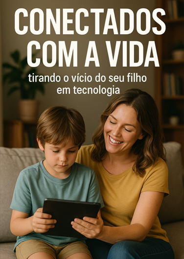

⭐ EBOOK PARA MÃES E PAIS QUE DESEJAM MAIS PRESENÇA


 +2.000 famílias transformadas
+2.000 famílias transformadas
Recupere a infância dos seus filhos — tire as telas sem birras e conflitos.
Um guia prático para famílias que sentem o tempo de tela sufocando a rotina. Devolva às crianças o hábito de brincar, a calma e a atenção no mundo real.

100%
prático e humano
14
Dias para
um novo ritmo